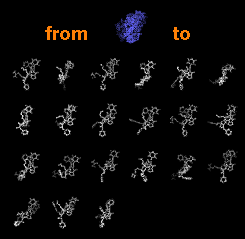

|  |
Tile Structures "tiles" models: it separates and spaces them evenly in the viewing plane. This is one way to show a set of related structures, such as snapshots from a simulation. See also: Ensemble Match, Ensemble Cluster
There are several ways to start Tile Structures, a tool in the Structure Comparison and MD/Ensemble Analysis categories. It is also implemented as the command tile, which has more options than the graphical interface.
Starting Tile Structures opens a dialog for specifying which models should be tiled. Individual models or blocks of models can be chosen from the Models list with the left mouse button. Chosen lines are highlighted in the dialog. Ctrl-click toggles the status of a line, while clicking on the first (or last) line of a contiguous block and then Shift-clicking on the last (or first) chooses all of the lines in the block.
Border scale indicates how far apart the structures should be spaced, with larger values giving greater separations. The default of 1.0 spaces the models so that their bounding spheres abut, while 0.0 superimposes the bounding sphere centers.
OK tiles the structures and dismisses the dialog, while Apply tiles the structures without dismissing the dialog. Close dismisses the dialog without performing any tiling. Help brings up this manual page in a browser window.
The command set independent can be used to make models rotate about individual centers rather than a collective center.
Default or previously saved positions can be restored with the command reset, while previous model transformations (but not scale or camera center) can be restored with Undo Move.